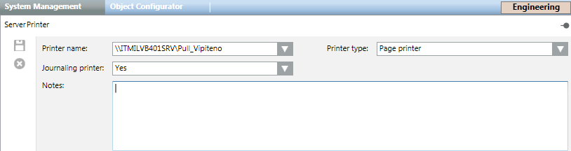

Printers
You can configure Desigo CC to interoperate with one or multiple printers available for the Windows operating system of the Desigo CC server. Printers can be used to print data from system applications or for the journaling printouts feature. For instructions, see Configuring Printers.
NOTE: The journaling printer must be dedicated to that function. Therefore, if you set up a journaling printer, you must also set up a separate printer to be able to print from system applications. For background information, see Journaling.
Printers Configuration Workspace
In Engineering mode, when you select a server printer object in System Browser, the System Management tab displays the printer configuration workspace.

- Printer name: Sets the printer from a list of all non-virtual printers directly connected to the Server. This field is required.
- Printer type: Sets the printer type (Line printer or Page printer). Default is: Line printer.
- Journaling printer: Sets whether the current local printer must be also used as journaling printer. Default value is: No.
A tab toolbar is also available, and allows you to save and delete printers.
Printers Toolbar | |
| Save the changes of the current printer. |
| Delete the current printer object selected in System Browser. |
 Save
Save Delete
DeleteTroubleshooting Overly-Frequent Printer Diagnostics Checks
The default behavior of Desigo CC server printers (diagnostic checks run every 20 seconds when a printer is idle) might be too frequent and annoying for users.
To adjust this value:
- In System Browser, select Project > Management System > Servers > Main Server > [printer].
- In the Extended Operation tab, next to the Job Interval property, do one of the following:
- For printers that do not need a fake print job to trigger the automatic printer diagnostics, enter 0 to disable the job interval.
- For printers that need a fake print job to trigger the automatic printer diagnostics, to decrease the frequency of diagnostics checks, enter an interval of time longer than the default one, and then click Apply.
NOTE: This setting is always rounded up to the nearest multiple of 5 seconds. For example, by setting less than 5 seconds, the check will always be carried out after 5 seconds; by setting a value between 6 and 9, the check will always be carried out after 10 seconds, and so on.
Troubleshooting Fault Event on Print Job in Queued Status
When more than five server printers are configured, it might happen that one of the print jobs is queued for more than 2 minutes, and then a Fault event is generated in Event List for the relevant printer.
To solve this issue:
- In System Browser, select Project > Management System > Servers > Main Server > [printer].
- In the Extended Operation tab, next to the JobTimeout property, enter an interval of time longer than 2 minutes (default), and click Apply.
- The print job will generate a Fault event only if the timeout interval is exceeded.
Troubleshooting Low Paper and Low Toner in Server Printers
Depending on the specific printer driver, the default behavior of Desigo CC server printers is to detect no paper and no toner even if paper or toner are low.
To detect low paper or low toner do the following:
- In System Browser, select Project > Management System > Servers > Main Server > [printer].
- Select the Extended Operation tab.
- For each of the following properties, select True and then click Apply:
- Enable Low Paper Detection
- Enable Low Toner Detection